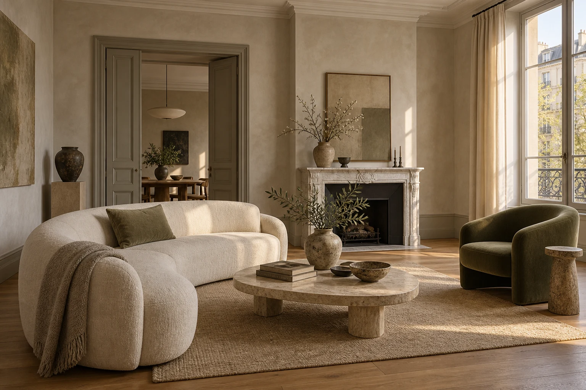
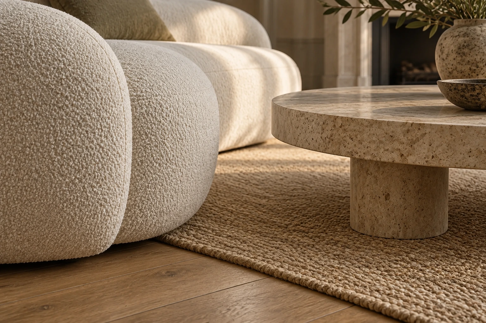
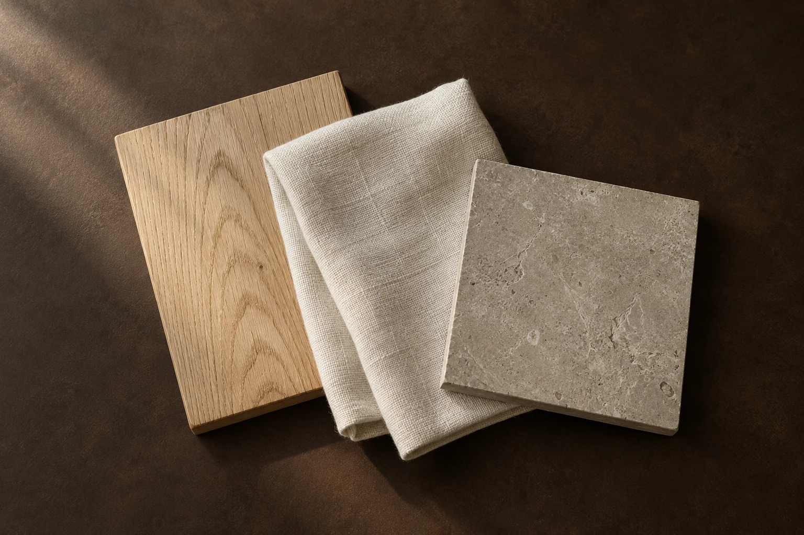
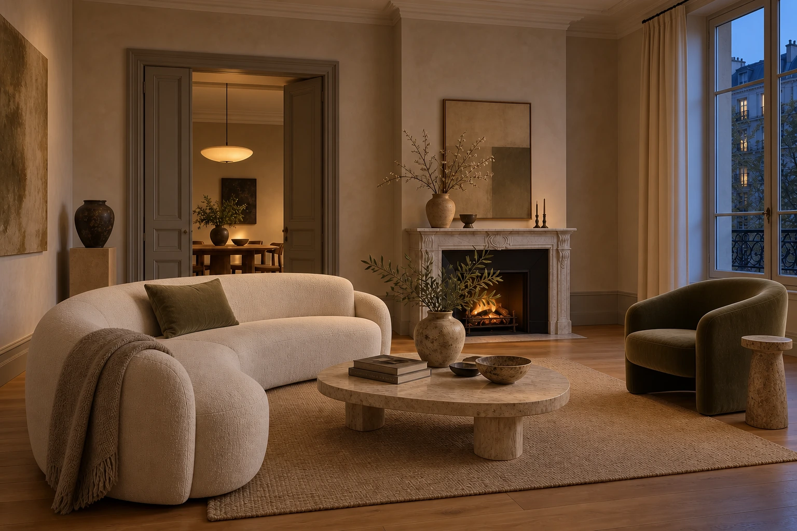

Raumkonzept
Für ein Zimmer, das eine neue Richtung braucht.
- Gespräch über Nutzung und Wünsche
- Möblierungsplan und Farbkonzept
- Ein abgestimmtes Materialblatt
Ein Raum beginnt
mit einem Gefühl.


Textur.Drei Materialien. Drei Arten, einen Raum zu halten.

01 / LEINENDas Leinen nimmt dem klaren Raum die Strenge. Seine offene Struktur lebt vom Licht und lädt zum Bleiben ein.

Am Abend tritt die Maserung zurück. Die Leuchte übernimmt, der Stoff wird tiefer. Ein Raum darf sich verändern, ohne ein anderer zu werden.
Wählen Sie oben Materialien für Ihr Musterblatt.
Eine stimmige Einrichtung beginnt mit Ihrem Alltag. Vom ersten Raumkonzept bis zur Auswahl von Möbeln, Farben und Materialien entsteht ein Plan, mit dem Sie weiterarbeiten können.
Für ein Zimmer, das eine neue Richtung braucht.
Für Räume, die als Ganzes funktionieren sollen.
Für die Umsetzung Ihres abgestimmten Entwurfs.
Fiktives Leistungsangebot innerhalb dieses Website-Konzepts.
Ich beginne mit dem, was Menschen berühren, brauchen und behalten möchten. Gute Proportionen und wenige bewusste Entscheidungen machen daraus einen persönlichen Ort.
Ja. Lieblingsstücke und vorhandene Möbel werden beim Raumkonzept berücksichtigt. Entscheidend ist, was Ihnen wichtig ist und wie Sie den Raum nutzen.
Raumzahl, gewünschte Leistungen und verfügbare Unterlagen. Der Umfang wird vor dem Start individuell abgestimmt; dieses Konzept zeigt keine verbindlichen Leistungspreise.
Wählen Sie Ihren Projektumfang. Im echten Auftritt würden anschließend Raumfotos, Maße und ein Kennenlerngespräch die Grundlage für Ihr Angebot schaffen.
Diese Demo speichert und versendet nichts. Sie benötigen keine persönlichen Daten.